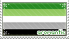
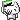
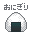
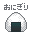

welcome (or not) to my homepage!

i am a dev that loves docker and rust!!!
pronouns: he/him or they/them
orientation: grayaro cishet
(what does this mean?)
an grayaromantic person that is heterosexual and cisgender; a straight person
who identifies with their birth gender but rarely experiences little romantic attraction, meaning my romantic attraction is not completely absent but is rare
 Connecting to lanyard.rest WebSocket for status
Connecting to lanyard.rest WebSocket for status

socials
projects
webrings!!!
retronaut
← previous next →cliques
 

Cringe is Dead || Vocaloid
fanlistings
piclog
my mood

last listened
Loading Last.fm info...
{% include calendar.html %}
►
大沼ダイスケ - Theme of Sound Lab (feat.初音ミク)
latest commit: {{ site.github.build_revision | slice:0,7 }}